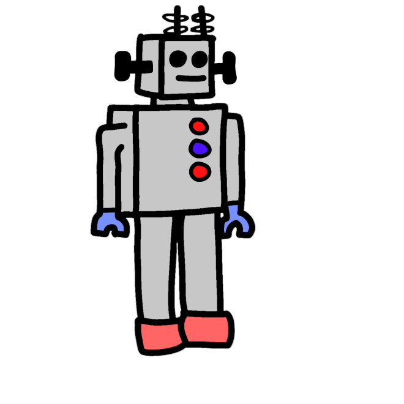

Robotics is the study of robots and what they do. If it's a simple concept, why aren't more people in the feild? Well, that's actually the BASE of robotics. Robotics is a massive topic, but it doesn't mean it isn't manageable. Using our navigation bar on the top, we can work on dissecting this topic together!
People always ask, why does robotics as a feild matter so much? The answer to the question is not as easy. Robotics helps a lot in day to say life, but in not the ways people think. Robotics has many differnent uses in our lives, whether it be to clean our houses to doing our surgeries. If we didn't have the technology of the feild of robotics, we wouldn't be able to get self-dirving cars or even Roomba® Robot Vacuums!